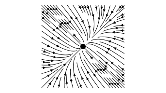
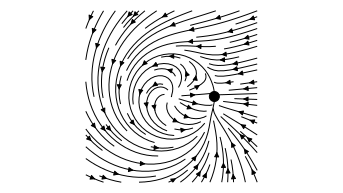
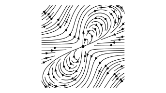

Ordinary Differential Equations
Sébastien Boisgérault, Mines ParisTech
Preamble
from numpy import *
from numpy.linalg import *
from matplotlib.pyplot import *
from mpl_toolkits.mplot3d import *Introduction
Vector Field
Let \(n \in \mathbb{N}^*\) and \(f:\mathbb{R}^n \to \mathbb{R}^n\).
Visualize \(f(x)\) as an arrow with origin the point \(x\).
In the plane (\(n=2\)), use quiver (Matplotlib).
Q Helper
def Q(f, xs, ys):
X, Y = meshgrid(xs, ys)
fx = vectorize(lambda x, y: f([x, y])[0])
fy = vectorize(lambda x, y: f([x, y])[1])
return X, Y, fx(X, Y), fy(X, Y)Vector Field / Rotation
Consider \(f(x,y) = (-y, x).\)
def f(xy):
x, y = xy
return array([-y, x])figure()
x = y = linspace(-1.0, 1.0, 20)
gca().set_aspect(1.0); grid(True)
quiver(*Q(f, x, y)) Ordinary Differential Equations (ODEs)
A solution of \(\dot{x} = f(x)\) is
a function \(x:I \to \mathbb{R}^n\),
defined on a (possibly unbounded) interval \(I\) of \(\mathbb{R}\),
such that for every \(t \in I,\)
\[\dot{x}(t) = dx(t)/dt = f(x(t)).\]
figure()
x = y = linspace(-1.0, 1.0, 20)
gca().set_aspect(1.0); grid(True)
streamplot(*Q(f, x, y), color="k") Initial Value Problem (IVP)
Solutions \(x(t)\), for \(t\geq t_0\), of
\[ \dot{x} = f(x) \]
such that
\[ x(t_0) = x_0 \in \mathbb{R}^n. \]
The initial condition \((t_0, x_0)\) is made of
the initial time \(t_0 \in \mathbb{R}\) and
the initial value or initial state \(x_0 \in \mathbb{R}^n\).
The set \(\mathbb{R}^n\) is the state space,
\(x(t)\) the state at time \(t\).
Higher-Order ODEs
Scalar differential equations structured as
\[ x^{(n)}(t) = f(x, \dot{x}, \ddot{x}, \dots, x^{(n-1)}) \]
can be converted to the standard form with the state
\[ y = (x, \dot{x}, \ddot{x}, \dots, x^{(n-1)}) \in \mathbb{R^n} \]
\[ \begin{array}{ccl} \dot{y}_1 &=& y_2 \\ \dot{y}_2 &=& y_3 \\ \vdots &\vdots& \vdots \\ \dot{y}_n &=& f(y_1, y_2, \dots, y_{n-1}) \end{array} \]
Pendulum

– Model / Pendulum
[, ] Establish the equations governing the pendulum dynamics when the mechanical energy of the system is constant.
[, ] Generalize the dynamics when there is a friction torque \(c = -b \dot{\theta}\) for some \(b \geq 0\).
– Result
\[ m \ell^2 \ddot{\theta} + b \dot{\theta} + m g \ell \sin \theta = 0 \]
Introduce the rotational frequency \(\omega = \dot{\theta}\) in rad/sec.
The pendulum dynamics is equivalent to:
\[ \begin{array}{lll} \dot{\theta} &=& \omega \\ \dot{\omega} &=& - (b/m\ell^2) \omega -(g /\ell) \sin \theta \end{array} \]
m=1.0; b=0.0; l=1.0; g=9.81
def f(theta_d_theta):
theta, d_theta = theta_d_theta
J = m * l * l
d2_theta = - b / J * d_theta
d2_theta += - g / l * sin(theta)
return array([d_theta, d2_theta])
figure()
theta = linspace(-1.5 * pi, 1.5 * pi, 100)
d_theta = linspace(-5.0, 5.0, 100)
grid(True)
xticks([-pi, 0, pi], [r"$-\pi$", "$0$", r"$\pi$"])
streamplot(*Q(f, theta, d_theta), color="k") 
– Model / Pendulum
[, ] Determine an approximation of the least possible angular velocity \(\omega_0 > 0\) such that when \(\theta(0) = 0\) and \(\dot{\theta}(0) = \omega_0\), the pendulum reaches (or overshoots) \(\theta(t) = \pi\) for some \(t>0\).
[, ] Answer the same question analytically.
Numerical Solution (Basic)
Given a finite time span \([t_0, t_f]\) and a small enough time step \(\Delta t > 0\), we can use the approximation:
\[ \begin{split} x(t + \Delta t) & \simeq x(t) + \Delta t \times \dot{x}(t) \\ & = x(t) + \Delta t \times f(x(t)) \\ \end{split} \]
to compute a sequence of states \(x_k \in \mathbb{R}^n\) such that:
\[ x(t = t_0 + k \Delta t) \simeq x_k. \]
Euler Scheme
(Fixed-step & explicit version)
def basic_solve_ivp(f, t0, x0, dt, t_f):
ts, xs = [t0], [x0]
while ts[-1] < t_f:
t, x = ts[-1], xs[-1]
t_next, x_next = t + dt, x + dt * f(x)
ts.append(t_next); xs.append(x_next)
return (array(ts), array(xs).T)Why the final transposition (.T)?
So that when
t, x = basic_solve_ivp(...),
x[i] refers to the values of the ith component of x.
(without the .T, it would be x[:][i])
Rotation / Solution
\[ \left| \begin{split} \dot{x} &= -y \\ \dot{y} &= +x \end{split} \right., \; \mbox{ with } \; \left| \begin{array}{l} x(0) = 1\\ y(0) = 0 \end{array} \right. \]
def f(xy):
x, y = xy
return array([-y, x])
t0, x0 = 0.0, array([-1.0, 0.0])
dt, tf = 0.001, 5.0
t, x = basic_solve_ivp(f, t0, x0, dt, tf)Trajectories
figure()
plot(t, x[0])
plot(t, x[1])
grid(True)Trajectories (State Space)
Represent solutions fragments in the background
figure()
xs = ys = linspace(-1.5, 1.5, 50)
streamplot(*Q(f, xs, ys), color="lightgrey")…
plot(x[0], x[1], "k")
plot(x0[0], x0[1], "ko")
dx = x[0][-1] - x[0][-2]
dy = x[1][-1] - x[1][-2]
arrow(x[0][-1], x[1][-1], dx, dy, width=0.02, color="k")
grid()
axis("equal")Beyond the Basic Solver
Many issues that our basic solver doesn’t address:
time-dependent vector field,
error control,
dense outputs,
and more …
Instead, use:
from scipy.integrate import solve_ivpDocumentation: solve_ivp (Scipy)
IVP / Rotation
Compute the solution \(x(t)\) for \(t\in[0,2\pi]\) of the IVP:
\[ \left| \begin{split} \dot{x}_1 &= -x_2 \\ \dot{x}_2 &= +x_1 \end{split} \right. \; \mbox{ with } \; \left| \begin{array}{l} x_1(0) = 1\\ x_2(0) = 0 \end{array} \right. \]
Solver Interface / Rotation
def fun(t, y):
x1, x2 = y
return array([-x2, x1])
t_span = [0.0, 2*pi]
y0 = [1.0, 0.0]
result = solve_ivp(fun=fun, t_span=t_span, y0=y0)Result Structure
The result is a dictionary-like object (a “bunch”).
Its fields:
t: array, time points, shape(n_points,),y: array, values of the solution at t, shape(n, n_points),…
(See solve_ivp documentation)
Non-Autonomous Systems
The solver may apply to systems that are not time-invariant
\[ \dot{y} = f(t, y) \]
The t argument in the definition of fun is mandatory, even if the returned value doesn’t depend on it (time-invariant system).
r_t = result["t"]
x_1 = result["y"][0]
x_2 = result["y"][1]figure()
t = linspace(0, 2*pi, 1000)
plot(t, cos(t), "k--")
plot(t, sin(t), "k--")
bold = {"lw": 2.0, "ms": 10.0}
plot(r_t, x_1, ".-", label="$x_1(t)$", **bold)
plot(r_t, x_2, ".-", label="$x_2(t)$", **bold)
xlabel("$t$"); grid(); legend()Variable Step Size
The step size is:
variable: \(t_{n+1} - t_n\) may not be constant,
automatically selected by the algorithm,
The solver shall meet the user specification, but should select the largest step size to do so to minimize the number of computations.
Optionally, you can specify a max_step (default: \(+\infty\)).
Error Control
We generally want to control the (local) error \(e(t)\):
the difference between the numerical solution and the exact one.
atolis the absolute tolerance (default: \(10^{-6}\)),rtolis the relative tolerance (default: \(10^{-3}\)).
The solver ensures (approximately) that at each step:
\[ |e(t)| \leq \mathrm{atol} + \mathrm{rtol} \times |x(t)| \]
options = {
# at least 20 data points
"max_step": 2*pi / 20,
# standard absolute tolerance
"atol" : 1e-6,
# very large relative tolerance
"rtol" : 1e9
}result = solve_ivp(
fun=fun, t_span=t_span, y0=y0,
**options
)
r_t = result["t"]
x_1 = result["y"][0]
x_2 = result["y"][1]figure()
t = linspace(0, 2*pi, 20)
plot(t, cos(t), "k--")
plot(t, sin(t), "k--")
bold = {"lw": 2.0, "ms": 10.0}
plot(r_t, x_1, ".-", label="$x_1(t)$", **bold)
plot(r_t, x_2, ".-", label="$x_2(t)$", **bold)
xlabel("$t$"); grid(); legend()
Dense Output
Using a small max_step is usually the wrong way to “get more data points” since this will trigger many (potentially expensive) evaluations of fun.
Instead, use dense outputs: the solver may return
the discrete data result["t"] and result["y"] and an approximate solution result["sol"] as a function of t with little extra computations.
options = {
"dense_output": True
}result = solve_ivp(
fun=fun, t_span=t_span, y0=y0,
**options
)
r_t = result["t"]
x_1 = result["y"][0]
x_2 = result["y"][1]
sol = result["sol"]figure()
t = linspace(0, 2*pi, 1000)
plot(t, cos(t), "k--")
plot(t, sin(t), "k--")
bold = {"lw": 2.0, "ms": 10.0}
plot(t, sol(t)[0], "-", label="$x_1(t)$", **bold)
plot(t, sol(t)[1], "-", label="$x_2(t)$", **bold)
plot(r_t, x_1, ".", color="C0", **bold)
plot(r_t, x_2, ".", color="C1", **bold)
xlabel("$t$"); grid(); legend()Well-Posedness
Well-Posedness of an IVP
Well-Posedness = Existence + Uniqueness + Continuity
A set of properties that ensures that common problems with IVPs cannot happen.
We are going to detail each property
Preamble: Local vs Global
So far, we have only dealt with global solutions \(x(t)\) of IVPs, defined for any \(t \geq t_0\).
This concept is sometimes too stringent.
Consider for example:
\(\dot{x} = x^2\) and \(x(0)=1.\)
def fun(t, y):
return y * y
t0, tf, y0 = 0.0, 3.0, array([1.0])
result = solve_ivp(fun, t_span=[t0, tf], y0=y0)
figure()
plot(result["t"], result["y"][0], "k")
xlim(t0, tf); xlabel("$t$"); ylabel("$x(t)$")Ouch.
There is actually no global solution.
However there is local solution \(x(t)\), defined for \(t \in \left[t_0, \tau\right[\) for some \(\tau > t_0\).
Indeed, the function
\[ x(t) = \frac{1}{1 - t} \]
satisfies
\[ \dot{x}(t) = \frac{d}{dt} x(t) = -\frac{-1}{(1 - t)^2} = (x(t))^2. \]
But it’s defined only for \(t<1.\)
tf = 1.0
result = solve_ivp(fun, t_span=[t0, tf], y0=y0, max_step=0.01)
figure()
plot(result["t"], result["y"][0], "k")
ylim(0.0, 10.0); grid(); xlabel("$t$"); ylabel("$x(t)$")
This local solution is also maximal:
You cannot extend this solution beyond \(\tau=1.0\).
– Local/Maximal Solution
[] Find a local solution \(x(t)\) of \(\dot{x} = x^2\) such that \(x(0) = x_0\) under the assumption that \(x(t) \neq 0\) when \(t\geq 0\).
Hint: compute \(d(1/x(t))/dt.\)
[] Find for every \(x_0 \neq 0\) a maximal solution. When is it global?
Bad News (1/3)
Sometimes things get worse than simply having no global solution.
– No Local Solution
Consider the scalar IVP with initial value \(x(0) = (0,0)\) and right-hand side
\[ f(x_1,x_2) = \left| \begin{array}{rl} (+1,0) & \mbox{if } \; x_1< 0 \\ (-1,0) & \mbox{if } \; x_1 \geq 0. \end{array} \right. \]
– No Local Solution
def f(x1x2):
x1, x2 = x1x2
dx1 = 1.0 if x1 < 0.0 else -1.0
return array([dx1, 0.0])
figure()
x1 = x2 = linspace(-1.0, 1.0, 20)
gca().set_aspect(1.0); grid(True)
quiver(*Q(f, x1, x2), color="k") – No Local Solution
This system has no solution, not even a local one, when \(x(0) = (0,0)\).
Proof
Assume that \(x: [0, \tau[ \to \mathbb{R}\) is a local solution.
Since \(\dot{x}(0) = -1 < 0\), for some small enough \(0 < \epsilon < \tau\) and any \(t \in \left]0, \epsilon\right]\), we have \(x(t) < 0\).
Consequently, \(\dot{x}(t) = +1\) and thus by integration
\[ x(\epsilon) = x(0) + \int_0^{\epsilon} \dot{x}(t) \, dt = \epsilon > 0, \]
which is a contradiction.
Good News (1/3)
However, a local solution exists under very mild assumptions.
Existence
If \(f\) is continuous,
There is a (at least one) local solution to the IVP
\(\dot{x} = f(x)\) and \(x(t_0) = x_0\).
Any local solution on some \(\left[t_0, \tau \right[\) can be extended to a (at least one) maximal one on some \(\left[t_0, t_{\infty}\right[\).
Note. A maximal solution is global iff \(t_{\infty} = +\infty\).
Theorem – Characterization of Maximal Solutions
A solution on \(\left[t_0, \tau \right[\) is maximal if and only if either
\(\tau = +\infty\) : the solution is global, or
\(\tau < +\infty\) and \(\displaystyle \lim_{t \to \tau} \|x(t)\| = +\infty.\)
In plain words : a non-global solution cannot be extended further in time if and only if it “blows up”.
Corollary
Let’s assume that a local maximal solution exists.
You wonder if this solution is defined in \([t_0, t_f[\) or blows up before \(t_f\).
For example, you wonder if a solution is global
(if \(t_f = +\infty\) or \(t_f < +\infty\).)
Idea
Try to prove that any local solution defined on some sub-interval \([t_0, \tau[\) with \(\tau < t_f\) is bounded.
If you succeed, then this solution cannot be maximal (it doesn’t blow up), thus a maximal solution is defined on \([t_0, t_f[\).
– Existence / Sigmoid
Consider
\[ \dot{x} = \frac{1}{1 + e^{-x}} \mbox{ with } x(0) = x_0 \in \mathbb{R} \]
[] Show that there is a (at least one) maximal solution.
[] Show that any such solution is global.
– Existence / Linear Systems
Let \(A \in \mathbb{R}^{n \times n}\) and \(x_0 \in \mathbb{R}^n\). Consider \[ \dot{x} = A x \; \mbox{ and } \; x(0) = x_0 \]
Aim. Show that any maximal solution is global.
[] Show that \(y(t) = \|x(t)\|^2\) is differentiable and satisfies \(y(t) \geq 0\) and \(\dot{y}(t) \leq \alpha y(t)\) for some \(\alpha \geq 0\).
[] Compute the derivative of \(y(t) e^{-\alpha t}\) and conclude that \(0 \leq y(t) \leq y(0) e^{\alpha t}\).
[] Prove that any maximal solution \(x(t)\) of the initial IVP is global.
Bad News (2/3)
Uniqueness of solutions, even the maximal ones, is not granted either.
(Note: why does uniqueness of local solution does not make sense?)
– Non-Uniqueness
The IVP
\(\dot{x} = \sqrt{x}\), \(x(0) = 0\)
has several maximal (global) solutions.
Proof
For any \(\tau \geq 0\), \(x_{\tau}\) is a solution:
\[ x_{\tau}(t) = \left| \begin{array}{ll} 0 & \mbox{if} \; t \leq \tau, \\ 1/4 \times (t-\tau)^2 & \mbox{if} \; t > \tau. \end{array} \right. \]
Good News (2/3)
However, uniqueness of maximal solution holds under mild assumptions.
Notation – Jacobian Matrix
Let \(x=(x_1, \dots, x_n)\) and \(f(x) = (f_1(x), \dots, f_n(x))\).
The Jacobian matrix of \(f\) is defined as
\[ \frac{\partial f}{\partial x} := \left[ \begin{array}{ccc} \frac{\partial f_1}{\partial x_1} & \cdots & \frac{\partial f_1}{\partial x_n} \\ \vdots & \vdots & \vdots \\ \frac{\partial f_n}{\partial x_1} & \cdots & \frac{\partial f_n}{\partial x_n} \\ \end{array} \right] \]
(when all the partial derivatives are defined).
Uniqueness
If \(\partial f/\partial x\) exists and is continuous,
the maximal solution is unique.
Bad News (3/3)
An infinitely small error in the initial value could result in a finite error in the solution, even in finite time.
That would undermine the utility of any approximation method.
Definition – Continuity
Instead of denoting \(x(t)\) the solution, use \(x(t, x_0)\) to emphasize the dependency w.r.t. the initial state.
Continuity w.r.t. the initial state means that if \(x(t, x_0)\) is defined on \([t_0, \tau]\) and \(t\in [t_0, \tau]\):
\[ x(t, y) \to x(t, x_0) \; \mbox{when} \; y \to x_0 \]
and that this convergence is uniform w.r.t. \(t\).
Good News (3/3)
However, continuity wrt the initial value holds under mild assumptions.
Continuity
Assume that \(\partial f / \partial x\) exists and is continuous.
Then the dynamical system is continous w.r.t. the initial state.
Continuity / Prey-Predator
alpha = 2 / 3; beta = 4 / 3; delta = gamma = 1.0
def f(t, y):
x, y = y
u = alpha * x - beta * x * y
v = delta * x * y - gamma * y
return array([u, v])tf = 3.0
result = solve_ivp(f, t_span=[0.0, tf], y0=[1.5, 1.5], max_step=0.01)
x = result["y"][0]
y = result["y"][1]figure(); ax = gca()
xr = yr = linspace(0.0, 2.0, 1000)
streamplot(*Q(lambda y: f(0,y), xr, yr), color="grey")
for xy in zip(x, y):
x_, y_ = xy
ax.add_artist(Circle((x_, y_), 0.2, color="#d3d3d3"))
ax.add_artist(Circle((x[0], y[0]), 0.1, color="#808080"))
plot(x, y, "k")result = solve_ivp(f, t_span=[0.0, tf], y0=[1.5, 1.575], max_step=0.01)
x = result["y"][0]
y = result["y"][1]
plot(x, y, "k--")
axis([0,2,0,2]); axis("square")– Continuity / Initial Value
Let \(h \geq 0\) and \(x^h(t)\) be the solution of \(\dot{x} = x\) and \(x^h(0) = 1+ h\).
- []. Let \(\epsilon > 0\); find the smallest \(\delta > 0\) such that \(|h| < \delta\) ensures that \[\mbox{for any $t \in [t_0, \tau]$}, |x^{h}(t) - x^0(t)| < \epsilon\]
- []. What is the behavior of \(\delta\) when \(\tau\) goes to infinity?
– Continuity / Initial Value
Consider \(\dot{x} = \sqrt{|x|}\), \(x(0)=x_0\).
[] Solve numerically this IVP for \(t \in [0,1]\) and \(x_0 = 0\). Then, solve it again for \(x_0 = 0.1\), \(x_0=0.01\), etc.
[] Does the solution seem to be continuous with respect to the initial value?
[] Explain this experimental result.
– Well-Posedness / Prey-Predator
Let
\[ \begin{array}{rcl} \dot{x} &=& \alpha x - \beta xy \\ \dot{y} &=& \delta x y - \gamma y \\ \end{array} \]
with \(\alpha = 2 / 3\), \(\beta = 4 / 3\), \(\delta = \gamma = 1.0\).
[] Show that the system is well-posed.
[, ] Show that if \(x(0) > 0\) and \(y(0) > 0\), the maximal solution is global.
Hint. Compute \[ d/dt(\delta x - \gamma \ln x +\beta y - \alpha \ln y) \]
Asymptotic Behavior
Asymptotic = Long-Term: when \(t \to + \infty\)
(note: from now on, all systems are well-posed.)
Lorenz System
\[ \begin{array}{lll} \dot{x} &=& \sigma (y - x) \\ \dot{y} &=& x (\rho - z) \\ \dot{z} &=& xy - \beta z \end{array} \]

Visualized with Fibre
Hadley System
\[ \begin{array}{lll} \dot{x} &=& -y^2 - z^2 - ax + af\\ \dot{y} &=& xy - b xz - y + g \\ \dot{z} &=& bxy + xz - z \end{array} \]
Visualized with Fibre
Equilibrium
An equilibrium of system \(\dot{x} = f(x)\) is a state \(x_e\) such that the maximal solution of this system such that \(x(0) = x_e\) is \(x(t) = x_e\) for any \(t > 0\).
The state \(x_e\) is an equilibrium if and only if \(f(x_e) = 0\).
– Equilibrium / Pendulum
Reminder: the pendulum is governed by the equation
\[ m \ell^2 \ddot{\theta} + b \dot{\theta} + m g \ell \sin \theta = 0 \]
- [] Find the equilibriums of this dynamics.
Stability
About the long-term behavior of solutions.
“Stability” subtle concept,
“Asymptotic Stability” simpler (and stronger),
“Attractivity” simpler yet, (but often too weak).
Attractivity
Consider a well-posed ODE \(\dot{x} = f(x)\).
An equilibrium \(x_e\) is:
globally attractive if for every \(x_0\), the maximal solution \(x(t)\) of the IVP with \(x(0)=x_0\) exists for any \(t\geq 0\) and \[ \lim_{t \to +\infty} x(t) = x_e. \]
locally attractive if this property holds when \(x_0\) is sufficiently close to the equilibrium \(x_e\).
def f(xy):
x, y = xy
dx = -2*x + y
dy = -2*y + x
return array([dx, dy])figure()
x = y = linspace(-5.0, 5.0, 1000)
streamplot(*Q(f, x, y), color="k")
plot([0], [0], "k.", ms=10.0)Globally Attractive

def f(xy):
x, y = xy
dx = -2*x + y**3
dy = -2*y + x**3
return array([dx, dy])figure()
x = y = linspace(-5.0, 5.0, 1000)
streamplot(*Q(f, x, y), color="k")
plot([0], [0], "k.", ms=10.0)Locally Attractive
– Equilibrium / Stability
Consider a pendulum with a coefficient of friction \(b\).
[] Is any equilibrium globally attractive?
[, ]
Assume that \(b>0\). Determine graphically the equilibriums which are locally attractive.
What happens when \(b=0\)?
[, ] Prove that no equilibrium is locally attractive when \(b=0\).
Hint: study the evolution in time \[ E = J \dot{\theta}^2 / 2 - m g\ell \cos \theta, \] with \(J = m\ell^2\), the total mechanical energy of the pendulum.
Attractivity
The equilibrium \(x_e\) is globally attractive iff:
for any \(x_0\) and for any \(\epsilon > 0\), there is a \(\tau \geq 0\) such that the maximal solution \(x(t)\) such that \(x(0) = x_0\) exists for all \(t \geq 0\) and satisfies:
\[ \|x(t) - x_e\| \leq \epsilon \; \mbox{ when } \; t \geq \tau. \]
Very close values of \(x(0)\) could lead to very different “speed of convergence” towards the equilibrium.
This is not contradictory with the well-posedness assumption: continuity w.r.t. the initial condition only works with finite time spans.
Example
\[ \left| \begin{array}{lll} \dot{x} &=& x + xy - (x + y)\sqrt{x^2 + y^2} \\ \dot{y} &=& y - x^2 + (x - y) \sqrt{x^2 + y^2} \end{array} \right. \]
Equivalently, in polar coordinates:
\[ \left| \begin{array}{lll} \dot{r} &=& r (1 - r) \\ \dot{\theta} &=& r (1 - \cos \theta) \end{array} \right. \]
Stream Plot
def f(xy):
x, y = xy
r = sqrt(x*x + y*y)
dx = x + x * y - (x + y) * r
dy = y - x * x + (x - y) * r
return [dx, dy]figure()
x = y = linspace(-2.0, 2.0, 1000)
streamplot(*Q(f, x, y), color="k")
plot([1], [0], "k.", ms=10.0)
First, make sure that the right-hand side is time-dependent:
def fun(t, y):
return f(y)Then, pick a large time span and an initial state just above the equilibrium \((1.0, 0.0)\):
t_span = (0.0, 600.0)
theta_0 = 2 * pi / 1000
y0 = [cos(theta_0), sin(theta_0)]y = solve_ivp(fun, t_span, y0=y0, dense_output=True).sol
t = linspace(t_span[0], t_span[-1], 1000)Plot the distance to the equilibrium as a function of time.
figure()
x1, x2 = y(t)[0], y(t)[1]
plot(t, (sqrt((x1-1.0)**2 + x2**2)))
grid()
xlabel("$t$")
Asymptotic Stability
Asymptotic stability is a stronger version of attractivity which is by definition robust with respect to the choice of the initial state.
Global Asymptotic Stability
The equilibrium \(x_e\) is globally asymptotically stable if:
for any \(x_0\) and for any \(\epsilon > 0\), there is a \(\tau \geq 0\) and a \(r > 0\) such that if \(\|x_1 - x_0\| \leq r\), the maximal solution \(x(t)\) such that \(x(0) = x_1\) exists for all \(t \geq 0\) and satisfies:
\[ \|x(t) - x_e\| \leq \epsilon \; \mbox{ when } \; t \geq \tau. \]
Equivalently:
for any \(r>0\), for any \(\epsilon > 0\), there is a \(\tau \geq 0\) such the maximal solution \(x(t)\) such that \(\|x(0) - x_e\| \leq r\) exists for all \(t \geq 0\) and satisfies:
\[ \|x(t) - x_e\| \leq \epsilon \; \mbox{ when } \; t \geq \tau. \]
G.A.S. in Plain Words
Pick any bounded set \(B\) in \(\mathbb{R}^n\).
Consider each point of the set as an initial value \(x_0\), compute \(x(t, x_0)\). Define \(B_t\) as the set of all such \(x(t, x_0)\):
\[ B_t = \{ x(t, x_0) \; | \; x_0 \in B\} \]
The set \(B_t\) will converge to the equilibrium \(x_e\):
\[ \sup \, \{d(x_e, x) \; | \; x \in B_t\} \to 0 \, \mbox{ when } \, t \to +\infty. \]
Local Asymptotic Stability
A variant of the global asymptotic stability: the property may hold only for small enough balls.
for some \(r>0\), for any \(\epsilon > 0\), there is a \(\tau \geq 0\) such that any maximal solution \(x(t)\) such that \(\|x(0) - x_e\| \leq r\) exists for all \(t \geq 0\) and satisfies:
\[ \|x(t) - x_e\| \leq \epsilon \; \mbox{ when } \; t \geq \tau. \]
– Asymptotic Stability / Vinograd
Consider the ODE with right-hand side:
def f(xy):
x, y = xy
q = x**2 + y**2 * (1 + (x**2 + y**2)**2)
dx = (x**2 * (y - x) + y**5) / q
dy = y**2 * (y - 2*x) / q
return array([dx, dy])figure()
x = y = linspace(-1.0, 1.0, 1000)
streamplot(*Q(f, x, y), color="k")
xticks([-1, 0, 1])
plot([0], [0], "k.", ms=10.0)
[] Does the origin of the system look attractive ?
[, ] Does it seem to be asymptotically stable ?
Hint.
Show if the origin is asymptotically stable, then it is stable, that is: for any \(r>0\), there is a \(\rho \leq r\) such that if \(|x(0)| \leq \rho\), then \(|x(t)| \leq r\) for any \(t\geq 0\).
Is the system stable (graphically)?